Cody Chan
Software Developer
Full stack developer with 5+ years of experience building relationships with families and supporting them. I want to develop software and applications to enrich my knowledge beyond the PERN stack while maintaining a sustainable work-life balance.
Technical Skills
Proficient in:
Javascript
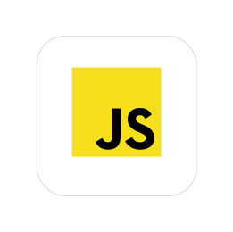React
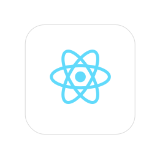Redux
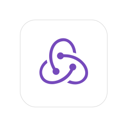Git
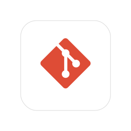Node.js
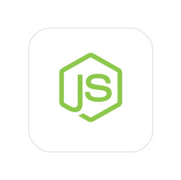Sequelize
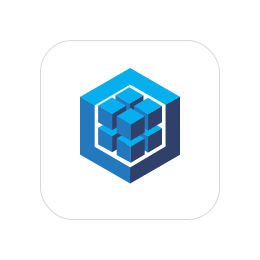PostgreSQL
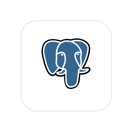familiar with:
HTML5
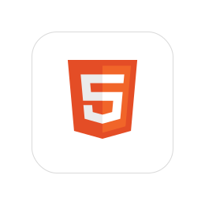CSS
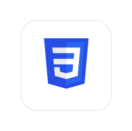SASS
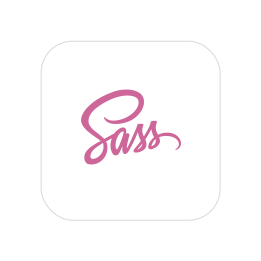SQL/PLPGSQL
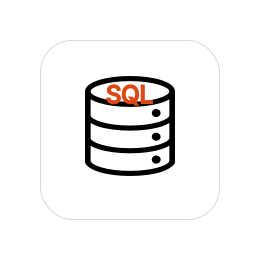Next.js
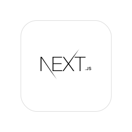Socket.io
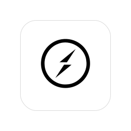About
I am a full-stack engineer who advanced my web development skills through Fullstack Academy. In my previous life, I filled my days by working with families focused on ensuring their children's prosperity. Although I am leaving the social work industry for the technology sector, I am still proud of my years of service where I made hard decisions for the families I worked with to ensure long-term goals. I have assisted families in gaining confidence in themselves to become the family that they wanted to be. Although the impact I had on the families was positive, I had to sacrifice my work-life balance to achieve it. So I used the time management and priority management skills that I developed by working with ACS on myself, and realized that a career change was in order.
I completed my training in web development through Fullstack Academy using the PERN stack. I am a naturally curious person who seeks answers and solutions to complex problems. Since starting the program I have deepened my knowledge of things I never knew existed and only became more eager to see how I can implement them in the projects I create. In the process of learning new technologies like Algolia and Next.js, I love to break and test things throughout my debugging process. The action brought back memories of my studies in Neuroscience and Psychology where I learned that the only way to explore the unknown is to test and experiment.
I collaborated with my team to make Optim8 - a dating app inspired by the difficulties faced by single mothers in the dating scene. We collaborated to research the needs of the target population and experimented with different APIs to evaluate how appropriate they would be for the features we wished to implement. To make my team's project a reality, and to ensure its matching capabilities are safe and fair, I delved into the abyss that was SQL and PLPGSQL for PostgreSQL. For others, this may just be a process and consequence of development. But for me, it was a moment when I knew that I can let go of my trauma of learning a language.
I am someone who can live in the moment, however, I am always looking ahead to the end goal, and how to achieve it. While working I would keep a holistic view of how it relates to the rest of a project, and one step at a time, view it in the context of the world around me.
Exp